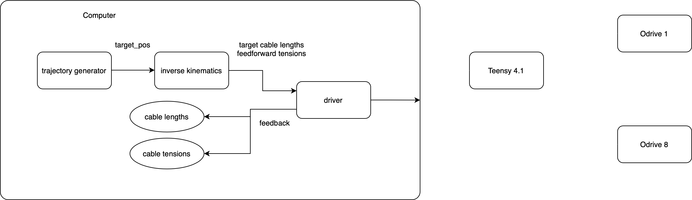
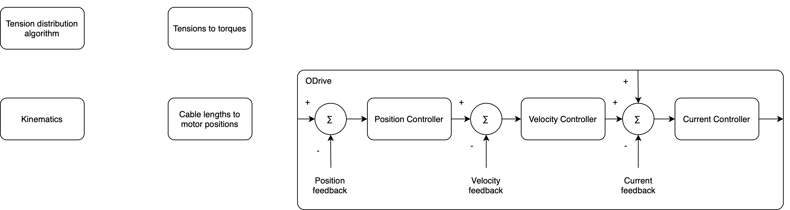
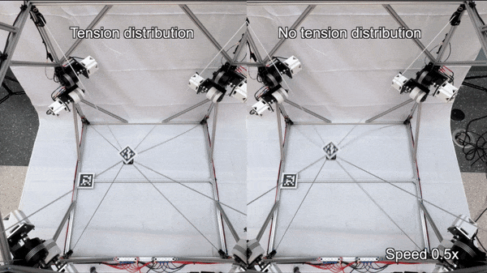

February, 2024
Cable driven parallel robot
Design, build and control of a cable driven robot.

Overview
Cable-driven robots are a special type of robotic system that uses flexible cables instead of rigid arms to control movement. They stand out for their lightweight design, large workspaces, and ability to handle heavy loads efficiently. Unlike traditional robots, cable robots can be more cost-effective, scalable, and adaptable to different applications, from motion simulators to large-scale 3D printing.
This project is an attempt at making a 5-degree of freedom (DOF) cable driven parallel robot (CDPR). The mechianical design is simple but functional, and using common hardware and fabrication techniques was prioritized. Control of the robot was programmed using the Python API of ROS2. The system is designed to constantly receive target positions and reaching them quickly.
System architecture
The software running this robot is based on ROS2 Iron, Python and Arduino C++. Image 1 depicts an overview of the system, including the hardware and software. Low level motor control is handled by Odrive S1’s, which are connected to the Teensy 4.1 microcontroller via CAN bus. The communication between the microcontroller and the Odrives is perfomed using the Odrive Arduino library. Information exchange between the laptop running the Python/ROS2 software and the microcontroller is done via USB. In this case, the information is transmitted as strings.

The ROS2 software running on the computer is separated into multiple nodes:
Control
Keeping cable tensions within a range is critical for the proper operation of a cable-driven robot. Without tension, the cables can slacken or even lose contact with the pulleys, which causes instability and makes precise control nearly impossible. On the other hand, excessive tension increases the risk of damaging the cables, pulleys, or motor mounts, and can lead to increased wear on the entire system.

Pure position control for the motors proved problematic to keep cable tensions at all times, especially for larger movements. As motors had to move different amounts in between positions, some of the cables lost tension at times. So then a hybrid position + feedforward torque control strategy was selected. The control flow is shown in Image 2.
Tensions distribution
To calculate feedforward torque for the motors, a tension distribution algorithm based on [1] was implemented. This algorithm requires tension bounds for each cable, a the structure matrix for the current position of the robot, and the desired end effector forces. The result is the necessary tension on each cable to achieve the desired force. Ideally, this algorithm would run continuously, updating the structure matrix based on positioning feedback. But as there is no feedback on this system, this calculation is run once when a new target position is requested.

For a baseline comparison, a simple set of points forming a cube was used to command the robot. The robot was run on the same set of points under the same conditions, but enabling and disabling the tension distribution algorithm. These runs can be seen in Animation 1.
While visual feedback is enough to notice that the run with the feedforward tensions performs better in terms of cable slack and wiggle, tensions obtained from the estimated motor torque were recorded for comparison. The plots are shown in Image 3.
Both plots present the tensions for the 8 motors. While the plots are hard to read, it is important to observe two main differences in between them. One of them is the minimum tension peaks, the minimum tension with the tension distribution algorithm is reduced by a factor of 2. The other difference is the overall increase in tension, particularly noticeable in the last 4 movements. Overall, the mean tensions are also higher with the algorithm enabled, as shown in Table 1.
| TD enabled | Tension 1 | Tension 2 | Tension 3 | Tension 4 | Tension 5 | Tension 6 | Tension 7 | Tension 8 |
|---|---|---|---|---|---|---|---|---|
| Yes | 19.47 | 21.22 | 20.09 | 21.29 | 19.95 | 20.64 | 21.98 | 20.14 |
| No | 11.61 | 13.36 | 11.68 | 13.40 | 10.37 | 13.80 | 11.95 | 12.67 |
Performance
Several performance metrics are relevant for a robotic system like this one; accuracy, repeatability, maximum acceleration, maximum velocity are some of the most important characteristics. While it is important to characterize a system like this, it requires vast amounts of testing and very precise feedback mechanisms to get accurate metrics. Some rough numbers were obtained using feedback from AprilTags and an Intel Realsense camera, capturing data from the cube trajectory run.
Animation 2 shows data captured for both the coil trajectory and the cube trajectory. Data from the cube trajectory was post-processed to obtain accuracy metrics. The data points captured were grouped into clusters, and the mean for each cluster was obtained. Those means were then paired to the target positions and then the mean distance was calculated in between each pair of measured and target points. This yielded a value of 0.021 m. Further, velocity was computed from slow motion camera recordings for the same trajectory. The fastest observed speed was estimated to be around 2.4 m/s.
Future work
While a working system was achieved, there is a long way to go to have a robust and accurate system. Potential improvements include: